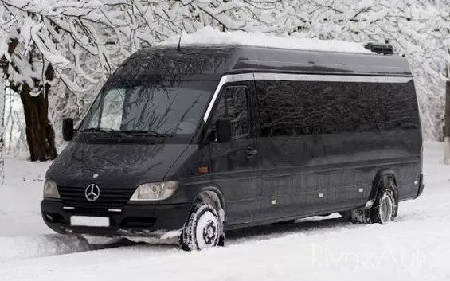
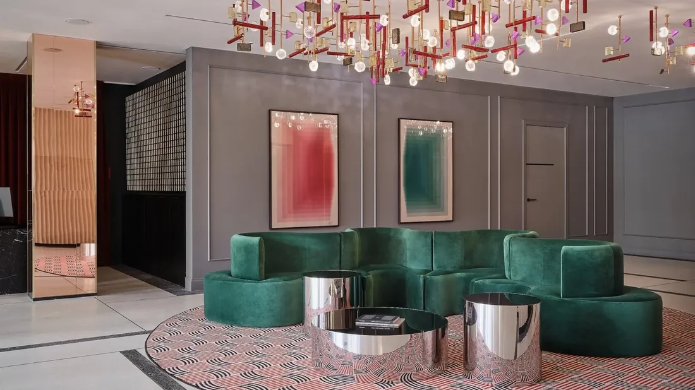
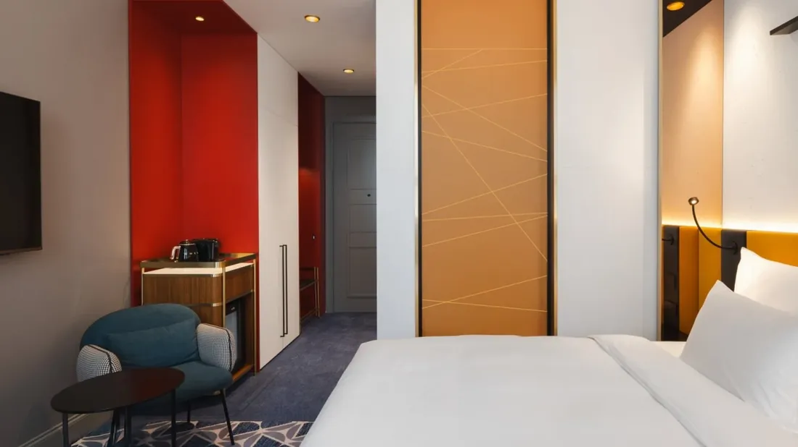
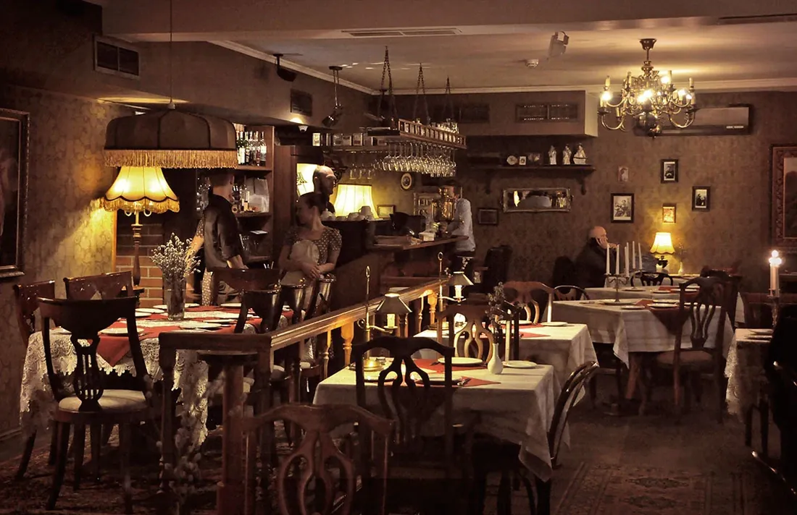
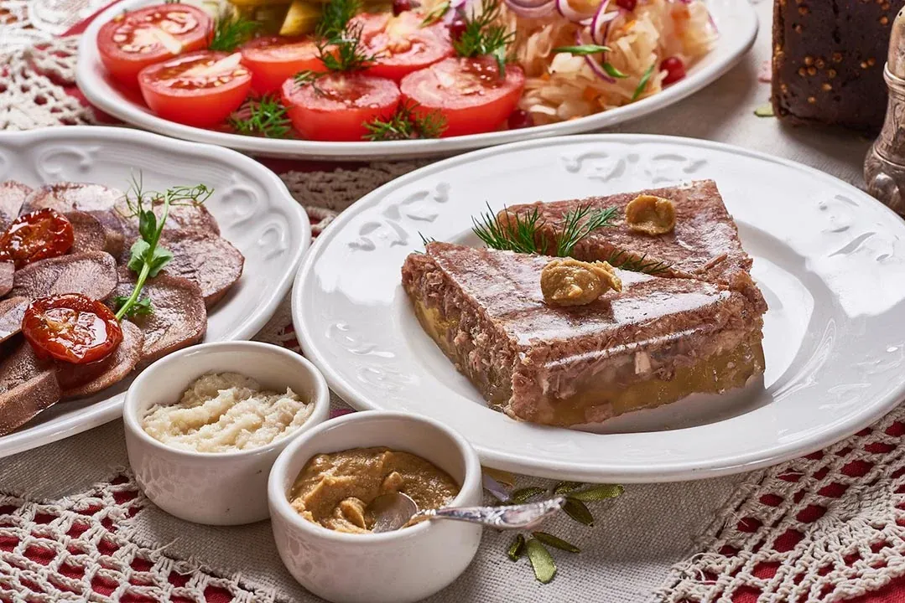
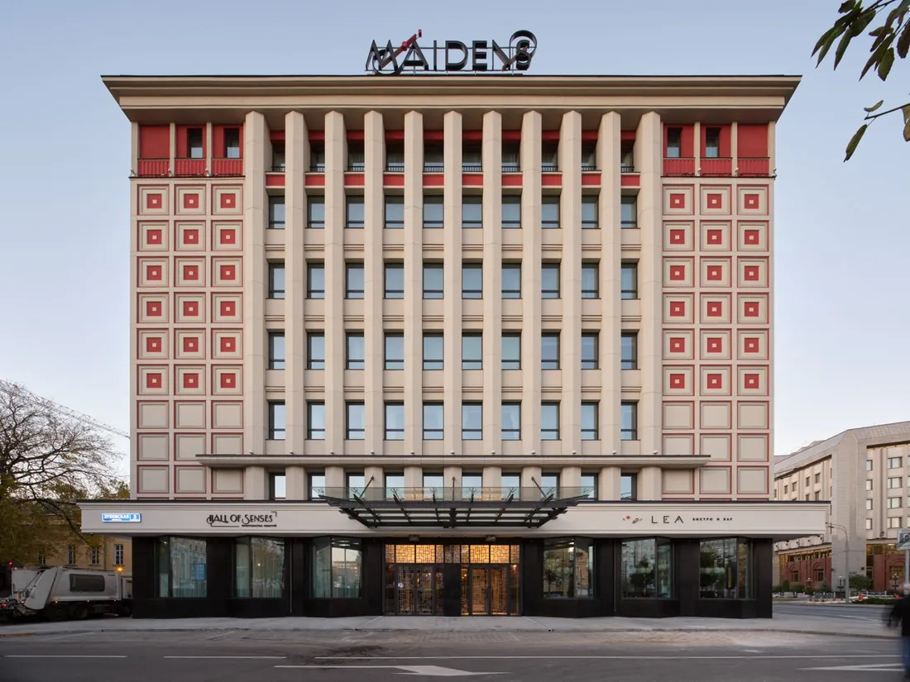

Москва
Прилёт, отдых и первый общий ужин
января 2027воскресенье
Утро
Добро пожаловать в Москву
Сообщите нам номер вашего рейса — мы встретим вас в аэропорту и организуем индивидуальный трансфер в отель. Ваше знакомство с Россией начнётся без забот о дороге.

День
Время выдохнуть после перелёта
Заселение в Maidens Hotel Moscow — новый пятизвёздочный отель в центре Москвы. Отдохните после дороги и настройтесь на неделю новых впечатлений.


Вечер
Первый вечер: знакомые лица и новые вкусы
Собираемся за общим столом в ресторане «Чемодан»: встречаем друзей, знакомимся с участниками и открываем сибирскую кухню. Дичь и северная рыба — первое гастрономическое знакомство с Россией, которая ждёт нас впереди.


Где ночуем
Maidens Hotel Moscow
Ночь 24 → 25 января
Новый пятизвёздочный отель в центре Москвы
Сайт отеля